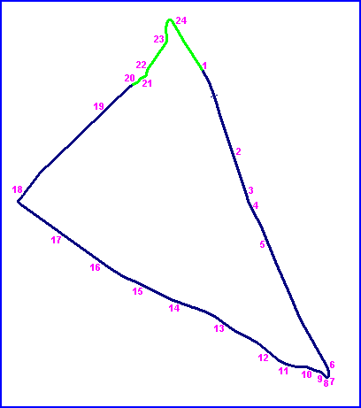
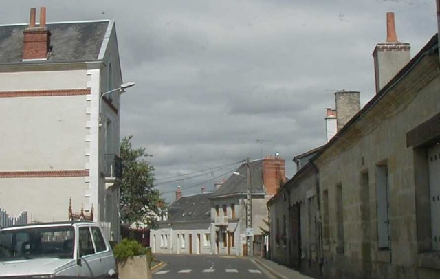
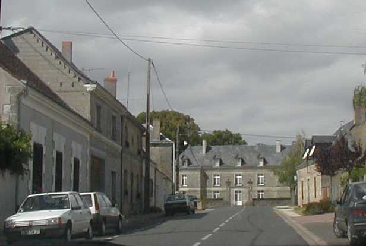
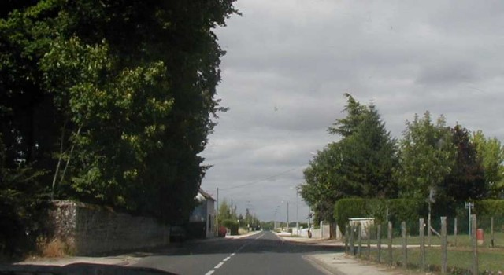
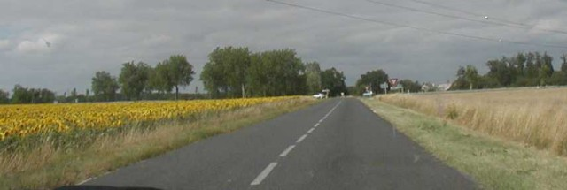

24
| Page 5 of 5 | Tours - D48 onto RN158 (Semblançay to La Pailleterie) |
|| Contents | RN158 | La Membrolle | RN159 | D48 | Semblançay || Home ||
Numbers on map indicate where the photos were taken. Click on
hyperlinks above.

Return to racingcircuits.net's Historic Circuits Photo Archive Main Index

20

21

22

23
24
Photographs ©Chris Hall. Reproduced here with kind permission.